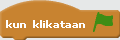
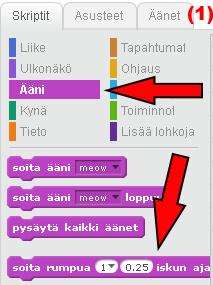
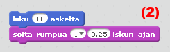
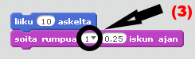
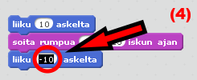
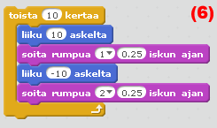
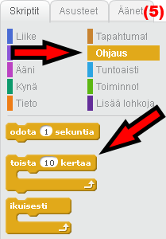
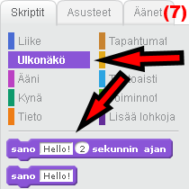
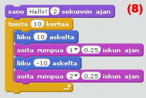

Ensimmäinen tunti
Tänään opit liikuttamaan hahmoa antamalla sille käskyjä. Avaa Scratch,
kirjaudu sisään omalla käyttäjätunnuksellasi ja klikkaa "Luo."
Jos et löydä "Luo"-painiketta, käy apusivulla!
Ensimmäinen tehtävä
Laita kissa tanssimaan, kun vihreää lippua klikataan.
Kissaa ohjataan vetämällä ohjeita sivun oikealla puolella olevaan työtilaan. Tämä tehtävä tehdään yhdessä. Voit tehdä tehtävän myös englanninkielisten ohjeiden avulla, jotka vievät tehtävän pidemmälle kuin tämän sivun ohjeet.Tee näin:
-
Vedä ruudun oikealla puolella olevaan työtilaan.
Kokeile, mitä tapahtuu, kun klikkaat palikkaa.
Lisää "Ääni"-valikosta rummun ääni(1). Liikuta palikkaa niin, että se kiinnittyy "liiku 10 askelta"-palikan alapuolelle(2). Voit vaihtaa rummun ääntä klikkaamalla nuolta(3).
Vedä toinen samanlainen liikepalikka kiinni rumpupalikkaan ja muuta askelmääräksi -10. Voit muokata palikoiden numeroita klikkaamalla niitä(4).
Lisää toinen rumpupalikka. Valitse tällä kertaa erilainen ääni.
Etsi "Ohjaus"-valikosta "toista 10 kertaa"-palikka(5) ja vedä se koko ohjeen ympärille(6).
Etsi "Ulkonäkö"-valikosta "sano Hello! 2 sekunnin ajan"-palikka(7) ja vedä se koko ohjeen alkuun(8). Voit muuttaa tekstiä ja laittaa kissan sanomaan, mitä haluat.
Etsi "Tapahtumat"-valikosta  ja vedä se koko ohjeen alkuun. Nyt voit klikata vihreää lippua ja katsoa, toimiiko ohjeesi.
Jatkotehtäviä:
-
Lisää kissalle tausta.
Lisää projektiin jotain muuta. Voit esimerkiksi lisätä uuden hahmon tai laittaa kissan tekemään jotain uutta.
Koska tietokone on supernopea tottelemaan käskyjä, et aina ehdi nähdä mitä tapahtuu.
Siksi käskyjen väliin täytyy joskus laittaa käsky 







